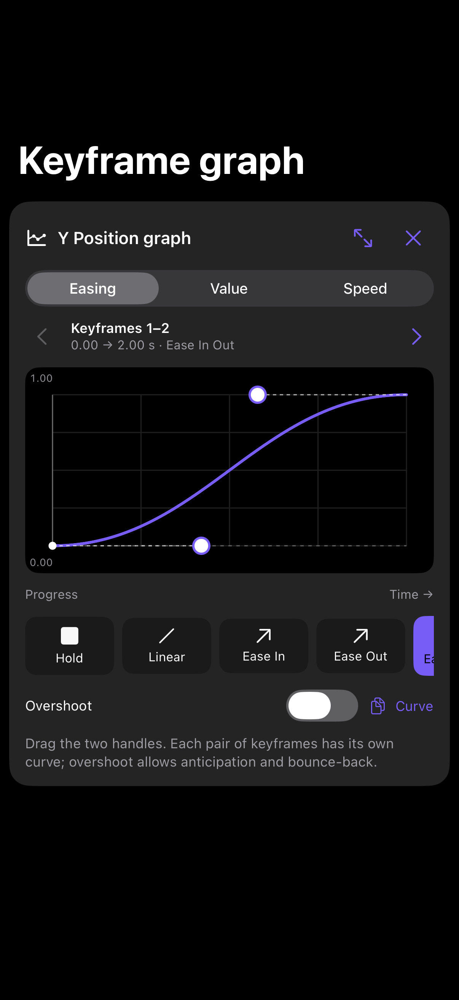
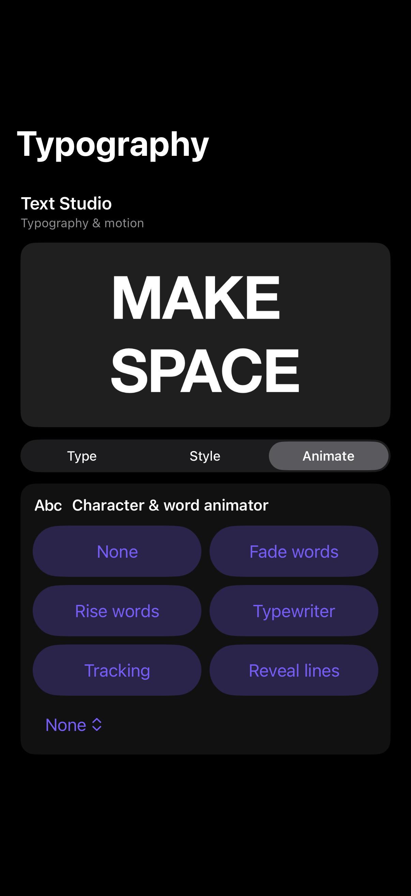
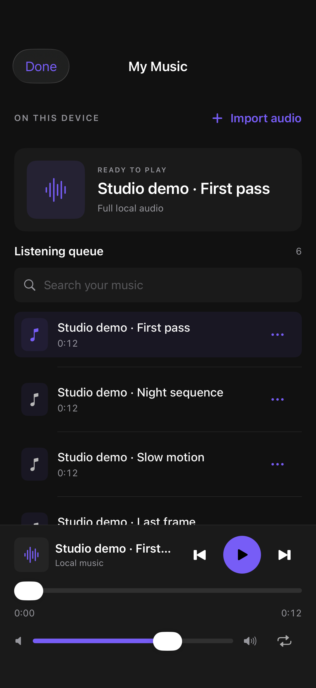
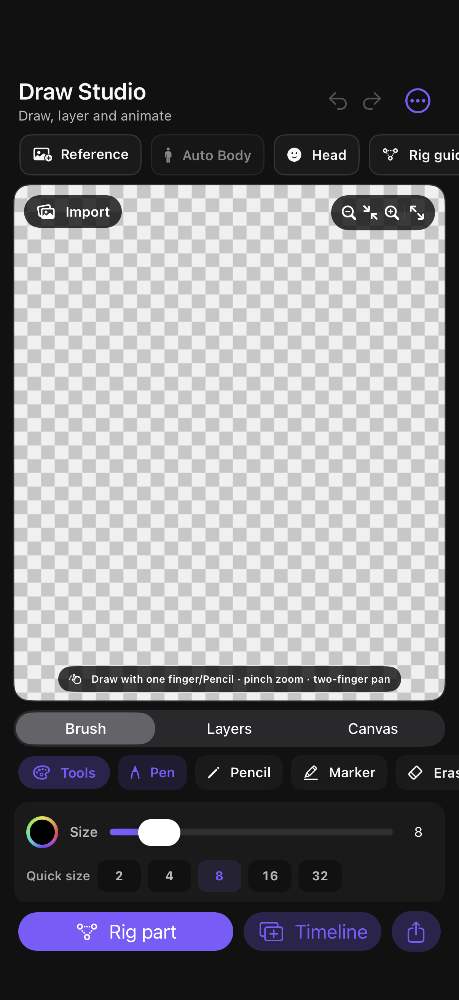

Layers & movement
Arrange clips, shapes and text. Shape keyframes with easing, value and speed graphs, and work with nested compositions.
Edit · Animate · ComposeINDEPENDENT iPHONE BETA
Build an edit in layers. Shape its movement, make every word count and work to your own soundtrack.
5.10.1 iOS 26+ 89.9 MB
Unsigned IPA. A compatible signing tool is required.

THE WORKSPACE
A focused set of tools for building motion edits on your phone.
Arrange clips, shapes and text. Shape keyframes with easing, value and speed graphs, and work with nested compositions.
Edit · Animate · ComposeSet typography, apply text animation presets and refine effect adjustments. Preview custom Soul Studio effects before adding them.
Type · Style · AdjustDraw with native brush tools, import reference images and arrange editable layers. Review automatic character cutouts or place guide points yourself.
Draw · Cut · ArrangeImport full local songs into My Music. Organize project audio, review beat markers and edit caption text.
Listen · Sync · CaptionINSIDE THE APP
Native iPhone screens, captured from the current beta.



This is an actively developed beta. Provider restrictions, device performance and recognition quality vary. Physical iPhone acceptance remains in progress.
GET STARTED
Soul Studio is distributed as an IPA and is not currently listed on the App Store.
The download opens the verified release on MediaFire. The file size and SHA-256 fingerprint are published below.
Use a compatible signing tool such as iLoader or follow the SideStore instructions. Enter Apple credentials only in the signing tool you trust.
Apple free-account provisioning expires after seven days. Your signing tool manages renewal; Soul Studio does not issue permanent certificates.
Soul_Studio_5.10.1_Unsigned.ipa
f51eaf60fc6bd0a99d870384880cdf2c184c24ba3fe01abed724363e000e4c42GOOD TO KNOW
The optional 1.14 GB Stable Diffusion image model runs locally after download, with no provider login or API key. It requires at least 6 GB RAM and approximately 4 GB free during installation. Video generation currently uses an optional connection to your own computer running compatible ComfyUI models; it does not run on the phone. Model quality and speed vary.
Soul Studio project files and supported effect packs can be imported. Alight Motion XML and QR packages use different formats; complete cross-app project compatibility is not currently verified.
Local editing, local music and the optional phone image model do not need a provider account. Community and cloud-sharing tools require Soul Studio sign-in and retain storage safeguards.
Join the Soul Studio community. Include your iPhone model, iOS version and the steps that reproduce the issue. Never post passwords or API keys.
This static website has no advertising trackers, account forms or media uploads. GitHub Pages processes ordinary request information for hosting. MediaFire, Discord and other linked services have their own privacy practices.